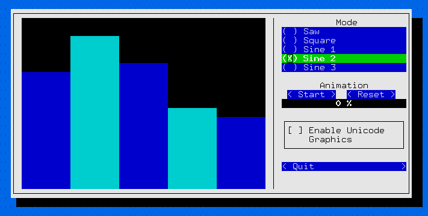

Terminal Whispering
Do more than print text with your terminal
Thomas Ballinger | @ballingt | me@ballingt.com | tom@recurse.com
Hello! I'd like to talk about how to use our terminals - we use them every day, we might as well learn how. This is a talk not about shell scripting, how to use the command line - but about the actual terminal.
How we use terminals
Many of us use terminals daily - typically in a call and response manner:
The Python interactive interpreter works like this, Bash works like this
But here another program you may be familiar with - it doesn't do call and response.
It takes over the whole screen.
At least 3 secret techniques we want to learn about, but there are a lot encompassed in that last one.
What are terminals?
What are terminals?
Well, we're usually talking about terminal emulators.
When I say "terminal", I'm usually talking about a terminal emulator.
You can see the little mac GUI stuff in this picture -
that's sort of important, we're going to talk about terminals as they exist
in unix systems - I don't know how much of this is translatable to the Windows console.
Windows users: open up a PUTTY terminal on a server for this or use Cygwin
So what do I mean by terminal?
I mean the interface a command line program has to the user - where
an interactive command line program assumes it's output is going
to be displayed, and where it's expected to get input from.
This means I'll be lumping in things the kernal does in tandem with the terminal emulator,
because this is about the interface presented to the application.
What is it that we're emulating?
I usually think we're emulating these things:
video terminals. Applications would be written
anticipating that the human user would be sitting in front
of one of these. But video terminals were emulating something
else originally...
Teleprinters or teletypewriters, or one of the brands...
Things like this have been around for over a hundred years!
Check out a youtube video of this stuff, they're
mechanical marvels!
These had been being used to send telegraphs for a long time
(great 1940 video about how they work: https://www.youtube.com/watch?v=HcMHam54EOI)
I'd like to read you a bit from a teletype ad, this one is from 1957.
A Teletype Printer is a communications device -- with a keyboard similar to a typewriter -- that enables you to send and receive printed messages. With it, written word can be sent instantaneously by wire...within the office or plant...or clear across the country; to a single destination...or to any number at the same time.
In today's business world, in fact, Teletype equipment is often more than a communications instrument. It is a basic element in production control sytems...its ability to transmit and reproduce text and punched tape is harnessed to office automation...it provides a "conveyor system" for channeling complex raw data to a computing center thousands of miles away.
Whether leased through your telephone company or other communication companies -- or purchased outright from us -- the versatile line of Teletype equipment can be tailored to almost any conceivable demand. For further information, contact your telephone company or other communications company, or send for our free booklet, "The ABC's of Teletype Equipment," Teletype Corporation, Dept. F7, 4100 Fullerton Ave., Chicago 39, Illinois.
1957 Golden Anniversary Year
The way teletypes work lays the foundation for the way
terminal emulators still work today.
(originally 1907)
application--------maybe copper?
Λ |
| |
signal over metal wire |
| |
typewriter<--------------+
Λ |
| ink
| |
| V
| paper
|
fingers pressing keys
A user types at an electronic typewriter which both puts ink to
paper immediately...
application--------maybe copper?
Λ |
| |
signal over metal wire |
| |
teletypewriter<-----------+
Λ |
| ink
| |
| V
| paper
|
fingers pressing keys
and also sends some kind of signal down a wire.
This could be only 5 bits for telegraph stuff
, then ANSI made it 7 -
who knows if you need a whole byte or not? Write a device driver
that deals with whatever telegraph stuff was already in place
application--------maybe copper?
Λ |
| |
signal over metal wire |
| |
teletypewriter<-----------+
Λ |
| ink
| |
| V
| paper
|
fingers pressing keys
The application sends back data that gets printed by the teletype.
Once again, very interesting on YouTube videos! I'll link at the end.
Next, let's look at the modernized version of our diagram...
application-------fwrite(bytes)
Λ |
| |
fread() returns bytes |
| |
terminal<-----------------+
Λ |
| +--GUI stuff--+
| |
| |
keypresses V
| screen
keyboard
"terminal" here means our terminal emulator.
`read` and `write` are system calls - we call them
on special files like standard in and out.
The application makes both of these calls.
application------print()--+
Λ |
| |
input() |
| |
terminal<-----------------+
Λ |
| +--GUI stuff--+
| |
| |
keypresses V
| screen
keyboard
Or as we call them in python, input and print.
This is a simplified diagram - there's probably some stuff between the application and the signals.
If it's so simplified, why do we need this intermediate step? Because keypresses also cause things
to be displayed, and messages that are sent might result in other things than text being displayed.
We'll look at input in a moment, but first let's look at...
What bytes can we write and what happens?
application-------write(bytes)
Λ |
| |
read() returns bytes |
| |
terminal<-----------------+
Λ |
| +--GUI stuff--+
| |
keypresses V
| screen
keyboard
What bytes can we send?
ASCII bytes
sys.stdout.buffer.write(b'some bytes')
control characters ([chr(x) for x in range(32)] e.g. '\a\n\r\v\b\f\t')
ASCII is a mapping of signals to meanings, when the signals getting sent on those metal wires
were sort of standardized in the 60's.
ASCII is a mapping of signals to meanings, when the signals getting sent on those metal wires
were sort of standardized in the 60's.
Even though you only need 5 bits to get all the letters, now we'll splurge and use 7 bits(!)
Once you start using 8-bit bytes to store a character each, we have an extra one - but ASCII was before this.
First we have literals - what you send is what will appear on screen, or in your telegraph message.
Control characters let us do special things... (demo!)
* python session first - but it's confusing to see
the returns from the interactive Python session
* write on a socket
* literals
* newlines
* carriage return
* alert
* linefeed, backspace
We've unlocked the secret of progress bars!
import time, sys
def report_progress(ratio, width=50):
filled = '=' * int(ratio * width)
rest = '-' * (width - int(ratio*width))
sys.stderr.write('\r|'+filled+rest+'|')
sys.stderr.flush()
for i in range(101):
report_progress(i/100.0, 50)
time.sleep(.01)
Notice: flush, writing strings instead of bytes
You might notice that we're not writing to the buffer anymore, and we're not writing bytes
What bytes can we send?
ASCII bytes
sys.stdout.buffer.write(b'some bytes')
control characters ([chr(x) for x in range(32)] e.g. '\a\n\r\v\b\f\t')
terminal probably using an encoding such that several bytes to make a character:
sys.stdout.buffer.write(b'\xc3\xb1')
sys.stdout.write(u'ñ') (via .encoding)
Now we're getting to the things that don't make sense with typewriters.
What bytes can we send?
ASCII bytes
sys.stdout.buffer.write(b'some bytes')
control characters ([chr(x) for x in range(32)] or '\a\n\v\b\f\t')
several bytes may encode a single character:
sys.stdout.buffer.write(b'\xc3\xb1')
sys.stdout.write(u'ñ') (via .encoding)
ANSI escape sequences ('\x1b[31m')
ANSI escape sequences
Sequence
Meaning
\x1b[23Amove cursor 23 rows up
\x1b[2Jclear entire screen
\x1b[ ?25lhide the cursor
\x1b[1mstart writing in bold
\x1b[31mstart writing in red
See Wikipedia entry on ANSI escape sequences for more.
VT52 allowed cursor placement. In widespread use by the 80s.
The VT100 was a big one. Applications would send these things to the terminal,
so you wanted them to work.
Move cursor: draw windows!
Show color: This implies our terminals are a little smarter - they have state!
The terminal is put into "red" mode, and everything after that is red until it stops being red. There was state in the typewriters, but it was just "how far to the right is the cursor."
Imagine it's 1984, maybe you're 13 or maybe you're 50. You're excited to use software
or log into bbs systems that do cool things with your video terminal, but they aren't
compatible! Terminal hardware might have had a switch on it to choose which
other terminal to emulate. Need an terminal compatibility layer - a jquery analogue
to smooth over terminal differences.
Compatibility Concerns
termcap, terminfo
curses
tputinfocmp
Terminfo is what we use for this - it's a database of terminals, and it examines the terminal's $TERM value. In the shell you'd use tput...
BUT the ANSI escape sequences are mostly honored, but that's like being optimistic and using cool new JavaScript features even though they won't work on
all browsers. And there are other commands not in the ASCII spec that are like using new ecma script stuff. For browsers, there's a thing called jquery
which acts as a compatibility layer between web application code and browsers.
echo "Input please"
tput cuu1
tput cuu1
tput el
read akey
tput clear
code sample from http://aplawrence.com/Basics/tput_stty.html
Blessings - Erik Rose - see "Designing Poetic APIs" from PyCon 2014
from blessings import Terminal
t = Terminal()
print t.bold('Hi there!')
print t.bold_red_on_bright_green('It hurts my eyes!')
with t.location(0, t.height - 1):
print 'This is at the bottom.'
BUT I wouldn't use ncurses (import curses) in the Python stdlib either. Good as a compatibility layer, bad as an api.
Erik Rose gave a great talk last year called "designing poetic apis" in which he uses his Blessings library as an example.
There are at least two reasons to use jquery: you like the abstractions it gives you, and compatibility.
In my experience, the compatibility is less important because the ASCII standard mostly took hold.
But it's still nicer than hardcoding, and it's definitely. Now that you know these are just bytes you're
still responsible for writing to the terminal, you're prepared to using Blessings!
Let's solve the fullscreen mystery with Blessings
Secrets unlocked by writing bytes to the terminal
Colored and styled text (bold, underline, blink...)
Moving the cursor anywhere
Alternate screen
Hide cursor
And much more (scroll regions, save/restore cursor position; man tput for more)
Bytes you're going to write to the terminal that aren't displayed, but instead change the way the terminal works.
What happens when the user types at the keyboard?
application-------write(bytes)
Λ |
| |
read() returns bytes |
| |
terminal<-----------------+
Λ |
| +--GUI stuff--+
| |
keypresses V
| screen
keyboard
What happens when the user types at the keyboard?
line discipline
data not available to application until the user hits return
backspace, delete word, reprint line, delete line
(try cat to see this behavior)
other terminal settings
Terminal (or something on the wire between the terminal
and the the application) doesn't give the bytes until
the user hits enter.
line editing discipline - before the application gets
the bytes, you can use delete! And delete word!
application--------maybe copper?
Λ |
| |
signal over metal wire |
| |
| |
teletypewriter<-----------+
Λ |
| ink
| |
| V
| paper
|
fingers pressing keys
Echoing back characters - the terminal is doing this,
just like a typewriter! But it doesn't have to.
Modified diagram! We have knobs on the terminal
emulator, and we adjust them with
+----application-------write(bytes)
| Λ |
get | |
& read() returns bytes |
set | |
| | |
+---⚒terminal<-----------------+
Λ |
| +--GUI stuff--+
| |
keypresses V
| screen
|
keyboard
There are knobs and dials on your terminal!
We change this stuff with ioctrl, cbreak, raw, etc
class of system calls for messings with this stuff
Relevant man pages
raw
termios
ioctl
fcntl
stty
isatty
We change this stuff with ioctrl, cbreak, raw, etc
class of system calls for messings with this stuff
I'll show a quick example that your eyes are welcome to glaze over for - because afterwards
I'll tell you to use a library for it.
More important is knowing you can change these things.
Turning off echo, using stty
$ stty -echo
$ echo "echo is turned off"
$ stty echo
Turning off echo in Python
>>> import getpass
>>> getpass.getpass()
Password:
'secret'
Turning off echo in Python
def getpass(prompt="Password: "):
import termios, sys
fd = sys.stdin.fileno()
old = termios.tcgetattr(fd)
new = termios.tcgetattr(fd)
new[3] = new[3] & ~termios.ECHO # lflags
try:
termios.tcsetattr(fd, termios.TCSADRAIN, new)
passwd = raw_input(prompt)
finally:
termios.tcsetattr(fd, termios.TCSADRAIN, old)
return passwd
from https://docs.python.org/2/library/termios.html
Important parts about this:
Don't worry too much about this - the gist is that we're checking the knobs and setting the knobs.
The finally here is really important - so a context manager might be nice!
import sys, termios
class NoEcho:
def __init__(self, in_stream):
self.fd = in_stream.fileno()
def __enter__(self):
self.orig = termios.tcgetattr(self.fd)
new = termios.tcgetattr(self.fd)
new[3] = new[3] & ~termios.ECHO
termios.tcsetattr(fd, termios.TCSADRAIN, new)
def __exit__(self, exc_type, exc_value, traceback):
termios.tcsetattr(self.fd), termios.TCSADRAIN, self.orig)
with NoEcho(sys.stdin):
h = sys.stdin.readline()
print(h)
This is an excellent fit for a context manger, because this is state external to our
Python program - if we crash, we don't want the terminal to be unsuable by the user.
(tip: if it ever is, try `reset`. Twice.)
Secret techniques made possible with these dials
turn off echo
send keys immediately
current terminal size
nonblocking input
os.isatty(sys.stdout.fileno())
Some of these are bucketed up in two collections of dial settings: raw, cbreak
You can do these yourself, I recommend context managers like we saw. Or use a library.
cbreak and raw - bundles of these modes you'll want to use.
Blessings can get terminal size, and once Blessed is merged will be able to do more of these.
Nonblocking is different, it's fcntl - it's a file descriptor thing. But also relevant!
What happens when the user types at the keyboard
buffering, line editing discipline
data not passed to application until the user hits return
backspace, delete word, reprint line, delete line - not much else
to see this, try cat (it doesn't use readline)
echoing back characters
mapping bytes to keys (try cat!)
Example bytes/key mappings
with my particular setup
Bytes read
Key presses
b'a'a
b'\x1b[23~'F11
b'\x1b[Z'Shift-Tab
b'\x1b[1;10B'Meta-Shift-Down
b'\x1b[1~'Home
What happens when the user types at the keyboard
buffering, line editing discipline
data not passed to application until the user hits return
backspace, delete word, reprint line, delete line - not much else
to see this, try cat (it doesn't use readline)
echoing back characters
mapping bytes to keys
bytes sent without being typed (cursor query)
Finally for terminal input, not all the bytes you read come from the user!
You should try this one:
>>> print("\x1b[6n")
+---- application-------write(bytes)
| Λ |
get | |
& read() returns bytes |
set | |
| | |
+---⚒ terminal<-----------------+
Λ |
| +--GUI stuff--+
| |
keypresses V
| screen
keyboard
Particularly interesting because writing bytes doesn't do anything
to the display, we just get some informative bytes back the next time
we call read!
Important to do this in unbuffered mode, otherwise they'll just show
up on the terminal line as though the user typed them.
Try it!
>>> print("\x1b[6n")
>>> 1R
>>> print("\x1b[6n")
>>> ESC[3;1R
This doesn't make sense without being in unbuffered mode
How can the terminal notify the application?
+----application-------write(bytes)
| Λ ⚡ |
get | ⚡ |
& read() ⚡signals! |
set | ⚡ |
| | ⚡ |
+---⚒terminal<-----------------+
Λ |
| +--GUI stuff--+
| |
keypresses V
| screen
keyboard
The terminal can push things: window changes, suspend, etc.
The behavior of these is set with our knobs.
Unix signals triggered from the terminal
ctrl-c, suspend, sigwinch
For a given terminal, you can customize when which signals are sent. Cbreak will make some keystrokes trigger signals, raw won't.
These interrupt reads!
PEP 475 - retry system calls failing with EINTR, but now this works differently
This is the difference between cbreak and raw
cooked, raw and cbreak
Cbreak and raw are combinations of settings that are generally useful. Both turn off echo, unbuffer your input. This is how you should get the settings you want.
Fancy terminal tricks in practice
You should now understand *how* the terminal works, but that doesn't mean you need to code this up yourself.
Now before I wrap up I want to give you a brief overview of tools available for doing cool terminal stuff.
Blessings - Erik Rose
from blessings import Terminal
t = Terminal()
print t.bold('Hi there!')
print t.bold_red_on_bright_green('It hurts my eyes!')
with t.location(0, t.height - 1):
print('This is at the bottom.')
You're prepared to use Blessings because you know that it provides strings that you're going to need to write to the terminal.
Erik Rose shoutout!
Blessings frees you from the curses assumption that you want a fullscreen app,
but python prompt toolkit does better for this.
x84, Blessed (soon included in blessings) - Jeff Quast
There will soon be input key handling, width calculations,
Blessed - Jeff Quast
from blessed import Terminal
t = Terminal()
print term.center(term.bold('X'))
with t.cbreak():
print(sys.stdin.read(1))
val = t.inkey(timeout=5)
if val:
print(val)
Urwid

Urwid for big GUIs - Java-like gui stuff
Check out pudb, mitmproxy, a version of bpython
If you're using the full screen mode
Review fullscreen mode! vim, emacs, tmux vs something that doesn't take over the full screen
Curses is often used this way
Click, Clint
Libraries for command line utilities
Still provide colored strings, getting a single character, detect whether stdout is a terminal like Blessings
readline
If you want to do things yourself, great - otherwise there's readline.
Curtsies
More of a framework, less composable
Once you understand the problem, you want somethign less handholdy and more flexible
layout engine
Unique features: (more) composable colored strings, diffing renderer, grids of terminal-width characters
Python Prompt Toolkit
Used for some cool tools, colors - maybe wait for the user to press a key
*NOT* fullscreen, lets you do cool things in a command line utility-like script
pty
this is how terminal emulators work!
pexpect
Thomas Kluyver and Jeff Quast
Python version of expect, for ru
termcast - Jesse Luehrs
$ telnet termcast.org
https://github.com/doy/python-termcast-server
https://github.com/doy/python-termcast-client
Because terminal output is just bytes, we can beam these bytes around!
Further Reading:
Fun Videos
Thanks for listening!
I'll announce on Twitter (@ballingt) when a blog post is up
I'll be at both days of sprints, probably working on bpython and Curtsies